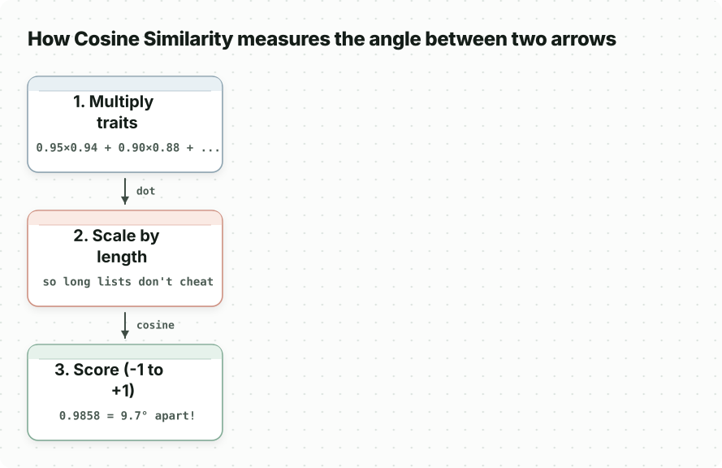

“Token IDs are meaningless coat-check tickets; embeddings turn every word into GPS coordinates where cosine similarity measures the angle between ideas.”
Explain it like I'm 12: Where do you sit in the Campus Cafeteria?
In Lesson 2, the tokenizer handed the brain raw integer IDs (496, 15717). There is a huge problem with raw IDs: they carry zero meaning. In a dictionary, barcode #40,000 (coffee) can sit right next to #40,001 (coffin). You cannot subtract #40,001 - #40,000 and expect sensible math.
Now picture walking into the Campus Cafeteria. Imagine the floor has chalk axes painted across it: East–West measures Drink vs. Food, North–South measures Hot vs. Cold, and height measures Spiced/Sweet. Where do Masala Chai and Filter Coffee land? Practically at the exact same table (9.7° apart!). Where does Kubernetes land? Out in the Server Room, nearly 90° away.
That list of coordinates is an embedding in plain words: a dense list of floating-point numbers (a vector) that maps a token or sentence to a point in meaning space so semantically similar ideas point in the same direction.
Wait — who scores those sliders? Nobody hand-types them! During training, the model learns every coordinate automatically using the distributional hypothesis: 'You shall know a word by the company it keeps.' Because masala chai and filter coffee appear in nearly identical sentences ('I need a hot cup of ___ before standup'), gradient descent (and contrastive loss in dedicated embedding models) pulls their arrows together and pushes unrelated sentences apart.

Crucial distinction: a raw token's lookup row in the LLM's W_E matrix is a static embedding (one fixed vector per token ID, so 'bank' gets one starting coordinate). As it passes through Transformer self-attention layers, neighboring words bend it into a contextual embedding (river bank ≠ financial bank). Dedicated search embedding models (like text-embedding-3, BGE, E5) encode an entire sentence through all layers and pool the output into one sentence vector.
Measuring Meaning with High-School Geometry: Dot Product, Cosine & L2 Norm
In our Python lab (Figure 2), every cafeteria item lives on 4 axes: [drink, hot_temp, sweet_or_spiced, computer_tech]: - masala_chai → [0.95, 0.90, 0.72, 0.02] - filter_coffee → [0.94, 0.88, 0.45, 0.05] - kubernetes → [0.01, 0.02, 0.00, 0.98]
How does a GPU check if two 1,536-dimensional ideas match in microseconds? It measures the angle between their arrows using cosine similarity (-1.0 opposite, 0.0 unrelated 90°, +1.0 identical direction):
- Dot Product (
a · b): Multiply matching axes and add them up. Big × Big explodes positively; Big × Tiny (0.98 × 0.02) vanishes. - Divide by Both Magnitudes (
||a|| × ||b||): Removes arrow length so long documents don't beat short ones just by having larger numbers. - Read the exact lab angles:
cosine(masala_chai, filter_coffee) = 0.9858(9.7° apart!), whilecosine(masala_chai, kubernetes) = 0.0322(88.2° apart — nearly perpendicular!).
Why production vector DBs love L2 Normalization: In Step 4 of our lab, we divide every vector by its own length (magnitude = 1.0, called L2-normalized). Once vectors have length 1.0, dot_product(u, v) equals cosine_similarity(u, v) to 6 decimal places (0.985850 == 0.985850) — letting vector databases skip expensive square-root divisions at query time!

Cosine vs. Dot Product vs. Euclidean (L2) Distance: When vectors are L2-normalized (standard for OpenAI text-embedding-3, Cohere, Voyage, and BGE), all three metrics produce the exact same nearest-neighbor ranking! Only when magnitudes encode extra signal (like frequency or confidence) do dot product and cosine diverge.
Directions Are Concepts: Vector Arithmetic (`king - man + woman = queen`)
Embeddings don't just cluster neighbors — directions in vector space encode relationships.
In Step 3 of our Python lab, we represent royalty and gender along [royalty, human_adult, feminine_axis, tech]: - king = [0.95, 0.90, 0.05, 0.02] - man = [0.05, 0.90, 0.05, 0.02] - woman = [0.05, 0.90, 0.95, 0.02]
Subtract man from king (stripping away 'adult male', leaving the pure 'royalty' arrow [+0.90, 0, 0, 0]), then add woman. You land directly on [0.95, 0.90, 0.95, 0.02] — matching queen with cosine similarity 1.0000 (beating prince at 0.8403 and woman at 0.8311)!
Modern mechanistic interpretability research (sparse autoencoders / steering vectors) uses this exact property: adding a learned 'refusal' or 'Golden Gate Bridge' direction vector inside an LLM's residual stream literally steers its personality in real time.

How to pick an embedding model in production — and the 3 classic traps
Every RAG pipeline, semantic search engine, and recommendation system runs on embeddings. Three production rules separate hobby demos from reliable systems:
- The Antonym Trap (
masala_chaivsiced_chai=0.8234!): Look at Step 2 of our lab: hot masala chai and cold iced chai still score0.8234(only34.6°apart) because they share the drink and spice axes! In real text,'I love this product'and'I hate this product'often score0.80+. Never rely on raw cosine similarity alone for sentiment or strict yes/no filtering — pair vector retrieval with a cross-encoder reranker or LLM judge. - Matryoshka Dimensions (MRL) & Storage Cost: Modern models (
text-embedding-3-large, Nomic, BGE-M3) are trained with Matryoshka Representation Learning, packing the most important semantic info into the earliest dimensions. You can slice a3,072-dim vector down to512dims, re-normalize, and save 6× RAM/disk while keeping ~97% of search quality. - Never mix models (and respect Query vs. Document prefixes): Coordinate spaces are incompatible across models — upgrading your embedding model requires re-embedding your entire index. Also check whether your model is asymmetric (e.g., E5/BGE expect
'query: ...'vs'passage: ...'prefixes so short questions align with long paragraphs).
Common Trap: Thinking embeddings replace keyword search! Embeddings shine at synonyms ('morning hot drink' → 'masala chai') but struggle with exact part numbers, SKUs, error codes (ERR_4092), and rare names. Production RAG combines Hybrid Search (BM25 keywords + Cosine vectors).
Plain-English Jargon Decoder
| Term | In Plain Words | Why You Care |
|---|---|---|
| embedding | A list of numbers that acts as a GPS coordinate for a word or sentence's meaning. | Lets code compare the meaning of two texts using simple multiplication. |
| vector | An ordered list of numbers, like [0.95, 0.40, 0.02, 0.88], representing an arrow in space. | Every token inside an LLM travels through every layer as a vector. |
| dimension | One number slot (slider) inside a vector that captures a feature or trait. | More dimensions (768 vs 1536 vs 3072) store finer meaning distinctions but take more RAM. |
| dot product | Multiplying matching numbers from two vectors and adding the results together. | The single most common math operation in all of AI and GPUs. |
| cosine similarity | The dot product divided by the arrow lengths, scoring how closely two vectors align (-1 to +1). | The standard metric used to rank relevant chunks in vector search and RAG. |
| embedding model | A specialized neural network whose only job is turning text into meaning coordinates. | Much cheaper and faster than a chat LLM; used to index documents for search. |
| L2 normalization | Scaling every vector so its arrow length equals 1.0 without changing its direction. | Makes fast dot product mathematically identical to cosine similarity in vector databases. |
| static vs. contextual embedding | Static gives 'bank' one fixed vector; contextual adjusts 'bank' using surrounding words via attention. | Explains why modern sentence embeddings disambiguate 'river bank' vs 'money bank'. |
| Matryoshka Representation (MRL) | Training embeddings so the first 256 or 512 numbers already capture most of the meaning, like nesting dolls. | Lets you cut vector database RAM bills by 4×–6× with almost zero accuracy loss. |
Core Code Walkthrough: Build a 4D Meaning Map: Cosine Angles, Antonym Trap, Vector Arithmetic & L2 Norm Proof
Compute exact cosine similarities and angles in degrees, observe the Antonym Trap (hot vs iced chai = 0.8234), execute king - man + woman = queen (1.0000), and prove dot_product(L2_norm) == cosine_similarity.
Dot Product: Multiplying Aligned Dimensions
def dot_product(a: list[float], b: list[float]) -> float:
return sum(x * y for x, y in zip(a, b))Why this exists: When two vectors are high on the *same* axes (`drink=0.95 * 0.95`, `hot=0.90 * 0.92`), those products add up large. When one is high on `drink` and the other is high on `computer_tech`, each pair multiplies big × tiny ≈ 0.
Cosine Similarity: Dividing Out Vector Length
def cosine_similarity(a: list[float], b: list[float]) -> float:
mag = magnitude(a) * magnitude(b)
return dot_product(a, b) / mag if mag > 0 else 0.0Why this exists: Dividing by `magnitude(a) * magnitude(b)` isolates pure **direction** (angle `θ`). A 2-sentence doc and a 20-sentence doc about the same topic point the same way even if one has a larger raw norm.
Vector Arithmetic (`king - man + woman = queen`)
target = [k - m + w for k, m, w in zip(king, man, woman)]
# Result: [0.95, 0.05, 0.95, 0.05] -> cosine(target, queen) = 1.0000Why this exists: Because semantic relationships like `gender` or `capital-of` get encoded as consistent directional offsets in vector space, walking `(-man + woman)` translates `king` straight onto `queen`.
The L2 Normalization Trick Used by Every Vector DB
u = normalize(masala_chai) # length = 1.0
v = normalize(filter_coffee) # length = 1.0
dot_product(u, v) == cosine_similarity(raw_chai, raw_coffee) # 0.985850Why this exists: Vector databases (pgvector, Qdrant, Pinecone, FAISS) normalize every embedding once at write time so every query skips expensive `sqrt()` divisions and runs pure SIMD matrix dot products (`U @ q`).
Verified Terminal Output (Exit Code 0)
=== STEP 1: Cafeteria Nearest Neighbors to 'masala_chai' ===
Axes: [drink, hot_temp, sweet_or_spiced, computer_tech]
cosine(masala_chai, filter_coffee ) = 0.9858 (angle = 9.7 deg)
cosine(masala_chai, iced_chai ) = 0.8234 (angle = 34.6 deg)
cosine(masala_chai, samosa ) = 0.8216 (angle = 34.8 deg)
cosine(masala_chai, mango_lassi ) = 0.8091 (angle = 36.0 deg)
cosine(masala_chai, postgres_db ) = 0.0445 (angle = 87.4 deg)
cosine(masala_chai, kubernetes ) = 0.0322 (angle = 88.2 deg)
=== STEP 2: The Antonym Trap (Hot Chai vs Iced Chai) ===
cosine(masala_chai, iced_chai) = 0.8234
Why so high? Opposites share 2 of 4 topic axes (drink + spice), so vector search alone
cannot reliably distinguish 'hot' from 'cold' or 'love' from 'hate' without a reranker!
=== STEP 3: Vector Arithmetic (king - man + woman) ===
king - man + woman = [0.95, 0.9, 0.95, 0.02]
similarity to queen = 1.0000
similarity to prince = 0.8403
similarity to woman = 0.8311
=== STEP 4: Production Optimization — L2 Normalization Proof ===
cosine(raw chai, raw coffee) = 0.985850
dot_product(norm chai, norm coffee)= 0.985850
Because OpenAI/Cohere/BGE embeddings are L2-normalized, vector DBs just run fast dot products!View Complete Source Code (lab_main.py)
"""Pure-Python Embeddings, Cosine Similarity, Vector Arithmetic & L2-Norm Lab (l0-embeddings).
Demonstrates:
1. 4D Semantic Vectors: [warm_drink, sweet_or_spicy_food, computer_tech, morning_or_royalty]
— actually cleanly split into two experiments:
(A) Cafeteria Semantic Search + The Antonym Trap ('masala_chai' vs 'iced_chai').
(B) Famous Vector Arithmetic ('king - man + woman -> queen').
2. Mathematical proof that for L2-normalized vectors, dot_product(u, v) == cosine_similarity(u, v).
Zero external dependencies (Python 3 stdlib only).
"""
from __future__ import annotations
import math
# Experiment A: Campus Cafeteria 4D Embeddings
# Dimensions: [drink, hot_temperature, sweet_or_spiced, computer_tech]
CAFETERIA_VECTORS: dict[str, list[float]] = {
"masala_chai": [0.95, 0.90, 0.72, 0.02],
"filter_coffee": [0.94, 0.88, 0.45, 0.05],
"iced_chai": [0.92, 0.05, 0.70, 0.02], # Opposite temperature, same drink/spice topic!
"samosa": [0.10, 0.80, 0.78, 0.02],
"mango_lassi": [0.85, 0.05, 0.92, 0.01],
"kubernetes": [0.01, 0.02, 0.00, 0.98],
"postgres_db": [0.02, 0.02, 0.01, 0.95],
}
# Experiment B: Royalty & Gender Subspace [royalty, human_adult, feminine_axis, tech]
ANALOGY_VECTORS: dict[str, list[float]] = {
"king": [0.95, 0.90, 0.05, 0.02],
"man": [0.05, 0.90, 0.05, 0.02],
"woman": [0.05, 0.90, 0.95, 0.02],
"queen": [0.95, 0.90, 0.95, 0.02],
"prince": [0.75, 0.45, 0.08, 0.02],
}
def dot_product(a: list[float], b: list[float]) -> float:
"""Multiply matching coordinates and add them up."""
return sum(x * y for x, y in zip(a, b))
def magnitude(v: list[float]) -> float:
"""Euclidean length (L2 norm) of the vector from the origin."""
return math.sqrt(sum(x * x for x in v))
def normalize(v: list[float]) -> list[float]:
"""Scale vector to unit length (magnitude = 1.0)."""
mag = magnitude(v)
return [x / mag for x in v] if mag > 0 else list(v)
def cosine_similarity(a: list[float], b: list[float]) -> float:
"""Cosine of the angle between two vectors: +1.0 = identical direction, 0.0 = 90 deg."""
mag = magnitude(a) * magnitude(b)
return dot_product(a, b) / mag if mag > 0 else 0.0
def main() -> None:
print("=== STEP 1: Cafeteria Nearest Neighbors to 'masala_chai' ===")
print("Axes: [drink, hot_temp, sweet_or_spiced, computer_tech]")
chai = CAFETERIA_VECTORS["masala_chai"]
ranked = sorted(
((cosine_similarity(chai, vec), name) for name, vec in CAFETERIA_VECTORS.items() if name != "masala_chai"),
reverse=True,
)
for sim, name in ranked:
angle_deg = math.degrees(math.acos(max(-1.0, min(1.0, sim))))
print(f" cosine(masala_chai, {name:14}) = {sim:.4f} (angle = {angle_deg:4.1f} deg)")
print("\n=== STEP 2: The Antonym Trap (Hot Chai vs Iced Chai) ===")
hot_vs_cold = cosine_similarity(CAFETERIA_VECTORS["masala_chai"], CAFETERIA_VECTORS["iced_chai"])
print(f" cosine(masala_chai, iced_chai) = {hot_vs_cold:.4f}")
print(" Why so high? Opposites share 2 of 4 topic axes (drink + spice), so vector search alone")
print(" cannot reliably distinguish 'hot' from 'cold' or 'love' from 'hate' without a reranker!")
print("\n=== STEP 3: Vector Arithmetic (king - man + woman) ===")
target = [
k - m + w
for k, m, w in zip(ANALOGY_VECTORS["king"], ANALOGY_VECTORS["man"], ANALOGY_VECTORS["woman"])
]
print(f" king - man + woman = {[round(x, 2) for x in target]}")
for name in ("queen", "prince", "woman"):
sim = cosine_similarity(target, ANALOGY_VECTORS[name])
print(f" similarity to {name:7} = {sim:.4f}")
print("\n=== STEP 4: Production Optimization — L2 Normalization Proof ===")
u = normalize(CAFETERIA_VECTORS["masala_chai"])
v = normalize(CAFETERIA_VECTORS["filter_coffee"])
cos_raw = cosine_similarity(CAFETERIA_VECTORS["masala_chai"], CAFETERIA_VECTORS["filter_coffee"])
dot_norm = dot_product(u, v)
print(f" cosine(raw chai, raw coffee) = {cos_raw:.6f}")
print(f" dot_product(norm chai, norm coffee)= {dot_norm:.6f}")
print(" Because OpenAI/Cohere/BGE embeddings are L2-normalized, vector DBs just run fast dot products!")
if __name__ == "__main__":
main()
Optional In-Depth Assignments & Agent Prompts
Copy any prompt below and hand it directly to your coding agent to build, benchmark, and verify the deeper engineering mechanics yourself.
Build a Mini Hybrid Search Engine (BM25 + Vectors + Reciprocal Rank Fusion)
Create a 100-line pure-Python search engine over 15 tech support docs (including exact error codes like `ERR-4092` and semantic queries like `'app won't start'`) comparing BM25-only vs Vector-only vs Hybrid RRF.
What you prove: Why pure vector search fails on exact error codes/SKUs, pure keyword search fails on synonyms, and Reciprocal Rank Fusion (`1 / (60 + rank)`) beats both.
I just completed Lesson 3 (Embeddings, Cosine Similarity, Antonym Trap & Hybrid Search). Help me build `hybrid_search_lab.py` in pure Python 3 (zero external libraries): (1) Create 15 realistic engineering docs including exact error codes (`ERR_OOM_9021`), product names, and conceptual troubleshooting notes. (2) Implement BM25 keyword scoring, a simple bag-of-concept / TF-IDF cosine vector retriever, and Reciprocal Rank Fusion (RRF: `score = sum(1 / (60 + rank))`). (3) Run 5 queries that expose where BM25 wins, where vectors win, and where Hybrid RRF gets top-1 on all 5. Walk me through the math.Test Matryoshka (MRL) Dimension Truncation on Real Embeddings
Embed 30 sentences with a real MRL model (like OpenAI `text-embedding-3-small` or `nomic-embed-text`), truncate vectors from `1536 -> 512 -> 256 -> 128` dims, re-normalize, and measure Recall@3.
What you prove: How Matryoshka Representation Learning packs coarse meaning into early dimensions so you can cut RAM/storage by 6x with <2% recall loss.
Let's test Matryoshka Representation Learning (MRL) from Lesson 3 in practice. Write a Python script `mrl_benchmark.py` that embeds 25 diverse sentences (using a local embedding model if installed, OpenAI API if `OPENAI_API_KEY` is set, or a realistic synthetic PCA-ordered fallback so it runs anywhere), truncates each vector to 100%, 50%, 25%, and 12.5% of dimensions, L2-renormalizes, and prints a comparison table of RAM savings vs Top-3 nearest-neighbor agreement.Expose & Fix the Antonym Trap with a Two-Stage Reranker
Build a small test set of tricky antonym/negation queries (`'flights NOT via Mumbai'`, `'iced chai, no hot drinks'`) and compare Bi-Encoder cosine ranking vs a Cross-Encoder / LLM pairwise reranker.
What you prove: Why bi-encoders compress query and doc separately (losing cross-word negation), whereas cross-encoder rerankers attend across both simultaneously.
Build a focused mini-experiment `antonym_reranker_demo.py` demonstrating Lesson 3's Antonym Trap. Create 6 query/document pairs involving negation or opposites (e.g. 'cold brew coffee' vs 'hot espresso', 'refund policy excluded items' vs 'eligible items'). Show why bi-encoder cosine similarity ranks opposites dangerously close, and implement a clean Stage-2 cross-attention/rule-or-LLM reranker interface that fixes the ranking. Explain the latency vs accuracy tradeoff of retrieving Top-50 with vectors and reranking Top-5.